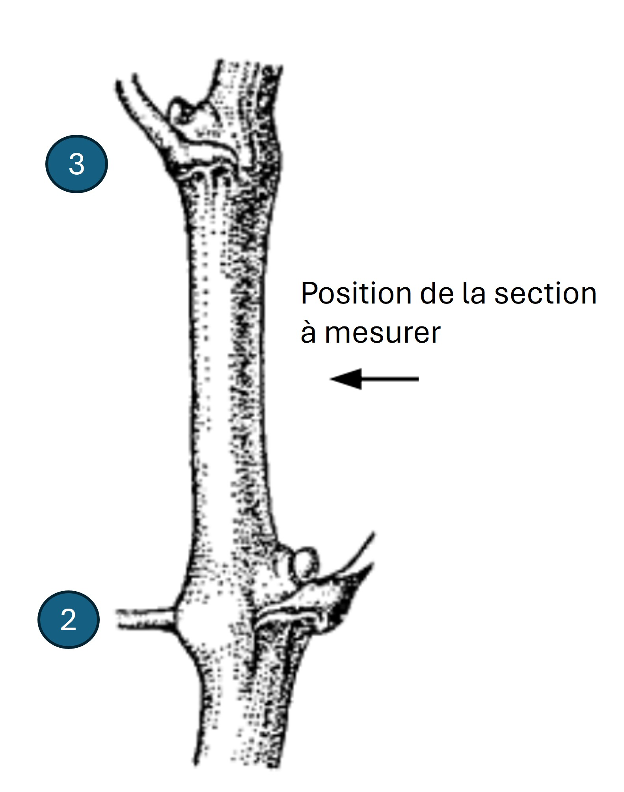

Diamètre des sarments
Objectif
Évaluer la vigueur de la vigne par la mesure du diamètre des sarments après la chute des feuilles.
La vigueur résulte de l’activité métabolique des organes en croissance, et se traduit par une intensité de respiration et de la vitesse de croissance [1].
Principe de la mesure
La vigueur du rameau de la vigne est un indicateur de l’équilibre physiologique de la vigne pour l’allocation des ressources entre les grappes et la végétation. Une vigne vigoureuse aura tendance à produire plus de grappes et de feuilles, ce qui peut avoir un impact sur le rendement et la qualité des raisins. L’évaluation de la vigueur est complémentaire à la mesure des composantes du rendement (nombre de grappes par cep, poids des grappes, poids par cep).
Le diamètre du sarment est une conséquence de la croissance du rameau pendant la saison végétative. Un diamètre plus important est le signe d’une croissance plus rapide et plus vigoureuse.
La méthode repose sur la mesure du diamètre des sarments après la chute des feuilles.
Le diamètre du sarment et son poids sont généralement bien corrélés [2]. La relation avec le poids de bois de taille par cep (indicateur de l’expression végétative, voir fiche correspondante) est par contre de moins bonne qualité et dépend de la qualité d’échantillonnage [3].
La mesure du diamètre des sarments est non destructive et rapide ce qui en fait un indicateur pratique pour l’estimation de la vigueur. Néanmoins, la pesée des sarments reste la méthode de référence de mesure de la vigueur.
Réalisation de la mesure
Échantillonnage
Nombre d’observations
Un minimum de 30 mesures doit être réalisé par parcelle ou par placette, 50 mesures étant recommandées.
Attention à l’échantillonnage, qui doit être soigné pour obtenir une estimation représentative de la vigueur des ceps observés.
Choix des ceps à observer
- Prendre des ceps représentatifs de la parcelle
- Exclure de la mesure les ceps malades ou chétifs et les ceps voisins des manquants
- Eviter les ceps de bordure de parcelle ou placette
Choix des sarments à mesurer
Mesurer au moins 2 sarments par cep, en s’assurant d’avoir au minimum 30 mesures pour chaque ensemble de ceps à évaluer (parcelle ou placette).
Le choix des sarments doit permettre de prendre en compte la variabilité de vigueur des sarments du cep selon le mode de taille. Les sarments cassés vers la base et les petits sarments (longueur inférieure à 20 cm) ne sont pas pris en compte.
- En taille courte (cordon simple ou double, gobelet), sélectionner des sarments sur la partie médiane du cordon.
- En taille mixte, (Guyot simple ou double), sélectionner 1 sarment issu d’un courson et 2 sarments en position médiane sur la baguette. En cas d’arcure de la baguette, mesurer sur la partie sommitale de l’arcure.
Mesure
Mesurer le diamètre du sarment à l’aide d’un pied à coulisse, sur un des mérithalles 2 à 4. La mesure se fait environ au milieu du mérithalle.
Attention à positionner le pied à coulisse perpendiculairement au sarment (éviter les mesures en oblique qui surestimeraient le diamètre).

Selon la variété, la section des sarments peut être plus ou moins circulaire. Si elle est elliptique, voire aplatie, par convention la mesure portera sur la plus grande longueur de la section [4].
Echelle
Le diamètre est exprimé en mm.
Outils
Pied à coulisse, de préférence digital.
Période de mesure
La notation est réalisée après la chute des feuilles, avant la taille.
Aspects pratiques
Une dizaine de minutes sont nécessaires à une personne habituée pour mesurer 30 sarments. Si possible prévoir un notateur pour plus de confort et gagner du temps sur le terrain.
Compléter la mesure du diamètre par un comptage du nombre de sarments par cep. Ce comptage est rapide et permettra de compléter l’évaluation de la biomasse produite par la vigne.
Traitement des résultats
Variables brutes
Les données sont stockées telles quelles, en précisant la date de la mesure et l’observateur.
Variables calculées
Les mesures peuvent être converties en classe, selon [4].
| Classe OIV | 1 | 3 | 5 | 7 | 9 |
|---|---|---|---|---|---|
| Classe | très petit | petit | moyen | grand | très grand |
| Diamètre | jusqu’à environ 5mm | environ 8mm | environ 11m | environ 14mm | environ 17mm et plus |
Cette variable est intégrée à la Vitis Ontology CO356:1000069.
Le protocole de mesure du caractère OIV 354 diamètre des entrenoeuds diffère légèrement de celui proposé ici. En effet, la mesure est une moyenne du diamètre de 10 entre-noeuds sur le tiers médian de rameaux à proximité du tronc, sur 10 rameaux [4].
Interprétation des résultats
La vigueur est directement liée à l’activité photosynthétique et à la répartition des ressources assimilées (sucres, nutriments) entre les différents organes. Une vigueur excessive reflète souvent une allocation disproportionnée des ressources vers la croissance des rameaux et des feuilles, au détriment de la maturation des baies. À l’inverse, une vigueur trop faible peut signaler un stress hydrique, nutritionnel ou un épuisement des réserves, limitant les capacités de production et de survie de la plante.
L’interprétation doit tenir compte du matériel végétal (cépage surtout et porte-greffe), qui a une forte influence sur la vigueur.
Compléments d’information
Autres méthodes
Mesure du poids des bois de taille et/ou des sarments
Estimation visuelle de la vigueur (descripteur OIV 351)